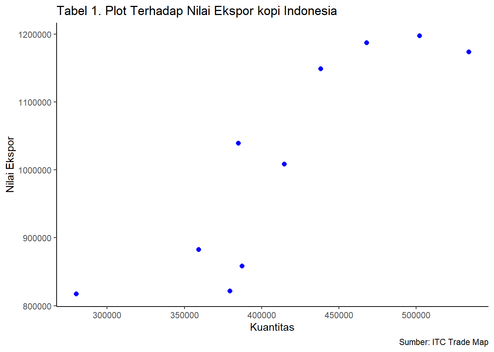

library(tidyverse)
library(readxl)
library(WDI)ANALISIS PENGARUH KUANTITAS TERHADAP NILAI EKSPOR KOPI INDONESIA DALAM 10 TAHUN TERAKHIR (2013-2022)
Metode Penelitian Politeknik APP Jakarta

1 PENDAHULUAN
1.1 Latar Belakang
Dalam beberapa tahun terakhir, permintaan untuk produk ekspor di seluruh dunia, terutama kopi, telah mengalami peningkatan signifikan. Meskipun kopi menjadi salah satu produk ekspor paling dicari dan menguntungkan, Indonesia menghadapi tantangan dalam mempertahankan pangsa ekspornya ke dunia. Data menunjukkan penurunan pangsa ekspor kopi Indonesia dari 5,1% pada 2005 menjadi 3,8% pada 2015, dengan pergeseran tujuan ekspor ke negara-negara ASEAN dan pasar regional lainnya.
Penyebab utama penurunan ini melibatkan perubahan dalam aturan keamanan pangan di Amerika Serikat, Uni Eropa, dan Jepang, bersamaan dengan penerapan konsep ekonomi hijau dan prinsip keberlanjutan SDGs. Sebagai contoh, di Jerman, peraturan terkait SDGs berdampak pada penurunan impor kopi sejak tahun 2009. Hal ini mendorong Indonesia untuk mengalihkan fokus ekspornya ke pasar ASEAN, seperti Malaysia dan Thailand, serta negara-negara seperti Italia, Rusia, dan Mesir.
Pentingnya peran kewirausahaan petani kopi sebagai UMKM dalam pertumbuhan ekonomi diakui, sejalan dengan teori Kirzner, Hausmann, dan Rodrik. Wirausahawan di sektor kopi Indonesia harus beradaptasi dengan perubahan pasar dan menciptakan peluang baru. Fenomena jaringan produksi atau rantai nilai (GVC) menjadi dasar dalam memahami fragmentasi produksi lintas batas pasar dan negara.
Meskipun kopi tetap menjadi produk ekspor yang menguntungkan, terdapat beberapa masalah terkait dengan ekspor ke dunia. Masalah utama adalah ketergantungan nilai ekspor pada kuantitas produk, dan produsen kopi di seluruh dunia bersaing meningkatkan produksi. Namun, belum jelas bagaimana kuantitas produk berpengaruh terhadap nilai ekspor ke dunia, sehingga analisis lebih lanjut diperlukan.
Penelitian ini bertujuan untuk menganalisis dampak kuantitas produk terhadap nilai ekspor kopi ke negara lain. Data historis dan survei akan digunakan, dan analisis regresi akan dilakukan untuk mengidentifikasi hubungan antara variabel-variabel yang memengaruhi nilai ekspor. Faktor ekonomi seperti harga, inflasi, dan permintaan juga akan dianalisis. Hasil penelitian ini diharapkan memberikan wawasan bagi produsen kopi untuk meningkatkan kuantitas produk mereka dan membantu dalam pengambilan keputusan untuk meningkatkan nilai ekspor kopi ke negara lain.
1.2 Ruang Lingkup
Berdasarkan permasalahan yang telah diidentifikasi, penelitian ini akan difokuskan pada pengaruh kuantitas terhadap nilai ekspor kopi Indonesia.
1.3 Rumusan Masalah
Berdasarkan konteks dan masalah yang telah diuraikan sebelumnya, pertanyaan penelitian ini dapat dirumuskan sebagai berikut: 1. Bagaimana kuantitas produk memengaruhi nilai ekspor kopi indonesia?
1.4 Tujuan Penelitian
Dengan merumuskan masalah tersebut, tujuan dari penelitian ini adalah untuk mengidentifikasi sejauh mana dampak kuantitas produk terhadap nilai ekspor kopi Indonesia Manfaat penelitian
1.5 Manfaat Penelitian
Dalam penulisan penelitian ini, diharapkan bahwa hasil karya ini akan memberikan manfaat baik secara akademis maupun praktis. Berikut adalah manfaat penelitian ini:
Manfaat Akademis: Hasil penelitian ini diharapkan dapat menjadi sumber referensi yang berharga bagi penelitian masa depan, khususnya yang terfokus pada dampak kuantitas terhadap nilai ekspor kopi Indonesia
Manfaat Praktis:
- Bagi Peneliti: Penelitian ini diharapkan dapat meningkatkan pemahaman dan wawasan peneliti dalam domain bisnis internasional, terutama dalam konteks ekspor dan impor.
- Bagi Masyarakat: Penelitian ini diharapkan dapat memberikan informasi yang relevan mengenai pengaruh kuantitas terhadap nilai ekspor kopi Indonesia serta dapat menjadi acuan dalam mengembangkan strategi ekspor dan impor yang efektif.
1.6 Package
Packages yang digunakan dalam laporan ini antara lain sebagai berikut:
2 STUDI PUSTAKA
2.1 Daya Saing
Daya saing merujuk pada kemampuan suatu wilayah dibandingkan dengan wilayah lain dalam merumuskan strategi yang efektif untuk meningkatkan kesejahteraan masyarakatnya. Secara sederhana, daya saing melibatkan interaksi kompleks antara faktor input (sebagai faktor utama yang membentuk daya saing) dan output (inti dari kinerja ekonomi, yaitu peningkatan kesejahteraan masyarakat) di dalam wilayah tertentu. Analisis daya saing dapat diukur menggunakan konsep Revealed Comparative Advantage (RCA) dan Export Product Dynamics (EPD).
Teori Revealed Comparative Advantage (RCA) RCA digunakan sebagai alat analisis untuk mengevaluasi keunggulan komparatif suatu komoditas dalam konteks suatu negara (Kemendag, 2008). Nilai RCA memberikan informasi mengenai tingkat daya saing suatu produk, di mana nilai yang semakin tinggi mengindikasikan daya saing yang lebih tinggi, dan sebaliknya.
Teori Export Product Dynamics (EPD) Untuk memahami posisi pangsa pasar, digunakan alat analisis Export Product Dynamics (EPD) dengan berfokus pada dua indikator utama, yaitu peningkatan pangsa pasar ekspor negara dan peningkatan pangsa pasar produk. Analisis EPD, seperti yang diuraikan oleh Tarman et al. (2011), mengidentifikasi empat posisi pangsa pasar berbeda, termasuk Rising Star (peningkatan pangsa pasar ekspor dan produk), Lost Opportunity (penurunan pangsa pasar ekspor, tapi peningkatan pangsa pasar produk), Falling Star (peningkatan pangsa pasar ekspor, tapi penurunan pangsa pasar produk), dan Retreat (penurunan pangsa pasar ekspor dan produk).
2.2 Faktor-Faktor yang Mempengaruhi Ekspor
Ekspor merujuk pada semua barang dan jasa yang dijual ke negara lain, termasuk jasa seperti transportasi, permodalan, dan dukungan lainnya yang mendukung proses ekspor. Terjadinya ekspor dipicu oleh kelebihan penawaran domestik, di mana harga domestik relatif lebih rendah dibandingkan dengan harga di negara lain. Permintaan terhadap volume ekspor kopi dipengaruhi oleh faktor-faktor seperti gross domestic product (GDP), nilai tukar riil, dan harga ekspor kopi. GDP digunakan sebagai indikator pendapatan rata-rata penduduk suatu negara, yang mencerminkan tingkat konsumsi dan daya beli terhadap barang dan jasa tertentu. Nilai tukar riil mengukur harga mata uang suatu negara terhadap mata uang asing, sedangkan harga ekspor kopi dan harga kopi dunia juga memainkan peran penting dalam menentukan permintaan ekspor.
2.3 Kerangka Penelitian
Komoditas kopi memiliki peran strategis sebagai penyumbang devisa negara dalam subsektor perkebunan, serta sebagai sumber pendapatan bagi petani kopi. Meskipun demikian, produktivitas kopi di Indonesia masih rendah jika dibandingkan dengan negara-negara produsen besar seperti Brazil, Vietnam, dan Kolombia. Penelitian ini akan melakukan analisis daya saing menggunakan metode Revealed Comparative Advantage (RCA) dan Export Product Dynamic (EPD). Selain itu, faktor-faktor yang mempengaruhi volume ekspor kopi Indonesia akan dieksplorasi dengan mempertimbangkan variabel GDP, nilai tukar riil, harga ekspor, dan harga kopi dunia. Hipotesis penelitian melibatkan asumsi bahwa nilai RCA kopi Indonesia diperkirakan lebih dari satu (RCA > 1), menunjukkan keunggulan komparatif yang kuat di pasar internasional. Selain itu, diasumsikan bahwa GDP, nilai tukar riil, harga ekspor, dan harga kopi dunia berpengaruh positif terhadap volume ekspor kopi Indonesia.
3 Metode penelitian
3.1 Data
Data yang digunakan dalam penelitian ini adalah data sekunder selama periode Tahun 2013 – 2022 yang mencakup volume dan nilai ekspor kopi Indonesia, nilai ekspor total dari Indonesia, nilai ekspor kopi dunia, nilai ekspor total dunia, nilai tukar rupiah terhadap dolar AS, dan pertumbuhan ekonomi Indonesia. Data bersumber dari Badan Pusat Statistik dan trade map. Untuk menganalisis pengaruh kuantitas terhadap nilai ekspor kopi Indonesia digunakan formula sebagai berikut: Laursen dalam Imelda (2017). RCA = ğ—ğ’Š ğ’Šğ’ğ’…ğ’ğ’ğ’†ğ’”ğ’Šğ’‚ ∑ ğš¾ğ’Š ğ‘°ğ’ğ’…ğ’ğ’ğ’†ğ’”ğ’Šğ’‚ / ğ—ğ’Š ğ’˜ğ’ğ’“ğ’𒅠∑ ğš¾ğ’Š ğ’˜ğ’ğ’“ğ’ğ’… Dimana: RCA : Revealed Comparative Advantage untuk komoditi i Xğ‘– ğ‘–ğ‘›ğ‘‘ğ‘œğ‘›ğ‘’ğ‘ ğ‘–ğ‘ : Nilai Ekspor komoditas dari Indonesia ∑ Χ𑖠ğ¼ğ‘›ğ‘‘ğ‘œğ‘›ğ‘’ğ‘ ğ‘–ğ‘ : Nilai ekspor total dari Indonesia Xğ‘– ğ‘¤ğ‘œğ‘Ÿğ‘™ğ‘‘ : Nilai ekspor produk dunia ∑ Χ𑖠ğ‘¤ğ‘œğ‘Ÿğ‘™ğ‘‘ : Nilai ekspor total dunia
Apabila nilai RCA yang didapat lebih besar dari satu maka dapat dikatakan Indonesia memiliki keunggulan komparatif dalam komoditi yang terkait dan mempunyai dayasaing yang kuat. Apabila nilai RCA kurang dari satu maka Indonesia tidak memiliki keunggulan komparatif terhadap komoditi tersebut atau komoditi tersebut dayasaingnya lemah. Semakin tinggi nilai RCA-nya, semakin kuat dayasaingnya (Balassa dalam Ratnawati, 2011). Untuk menganalisis pengaruh produksi kopi, pertumbuhan ekonomi dan kurs terhadap volume ekspor kopi Indonesia di pasar internasional menggunakan metode analisis regresi linier berganda dengan pendekatan model Ordinary Least Square (OLS) atau metode kuadrat terkecil biasa, dengan persamaan sebagai berikut: ğ‘³ğ’ğ’ˆğ‘½ğ’Œ = ğœ·ğŸ + ğœ·ğŸğ‘³ğ’ğ’ˆğ‘·ğ‘² + ğœ·ğŸğ‘³ğ’ğ’ˆğ‘²ğ‘¼ğ‘¹ğ‘º + ğœ·ğŸ‘ğ‘³ğ’ğ’ˆğ‘·ğ‘«ğ‘© + ğ’†ğ’Š Dimana : ğ¿ğ‘œğ‘”ğ‘‰ğ‘˜ :Volume ekspor kopi ğ¿ğ‘œğ‘”ğ›½0 : Konstanta ğ¿ğ‘œğ‘”ğ‘ƒğ¾ : Produksi Kopi Indonesia ğ¿ğ‘œğ‘”ğ¾ğ‘ˆğ‘…𑆠: Nilai tukar rupiah terhadap dollar AS ğ¿ğ‘œğ‘”ğ‘ƒğ·ğµ : Pertumbuhan ekonomi Indonesia ğ›½1ğ›½2 ğ›½3 : Koefisien regresi variabel ğ‘ƒğ¾, ğ‘ƒğ¸,ğ¾ğ‘ˆğ‘…𑆠ğ‘’ğ‘– : Error term
3.2 Data
| Tahun | Kuantitas (Tons) | Nilai Ekspor (Ribu USD) |
|---|---|---|
| 2013 | 534.025 | 1.174.044 |
| 2014 | 384.828 | 1.039.609 |
| 2015 | 502.021 | 1.197.733 |
| 2016 | 414.651 | 1.008.549 |
| 2017 | 467.799 | 1.187.157 |
| 2018 | 279.961 | 817.789 |
| 2019 | 359.053 | 883.123 |
| 2020 | 379.354 | 821.937 |
| 2021 | 387.264 | 858.558 |
| 2022 | 437.982 | 1.149.168 |
Sumber : ITC Trade Map
Penelitian ini menggunakan data hubungan antara variabel independen dan variabel lainnya, antara kuantitas ekspor dengan nilai ekspor kopi
3.3 Metode analisis
Metode analisis yang digunana yaitu regresi. regresi disebut juga dengan Ordinary Least Square (OLS). Digunakan untuk mencari parameter yang menghubungkan dua variabel. analisis univariat adalah analisis data secara serentak dimana data yang diamati hanya memiliki satu variabel dependen (variabel tidak bebas) pada setiap objek yang diamati.
\[ y_{t}=\beta_0 + \beta_1 x_t+\mu_t \] di mana \(y_t\) adalah hwy dan \(x_t\) adalah cty.
Keterangan : Y disebut juga variabel dependen X disebut juga variabel independent nilai Y dan X kita dapatkan dari data β0 dan β1 disebut parameter. Nilainya kita dapat dari hasil estimasi komputer. μ disebut juga error term / residual. Dia bersifat independen
4 PEMBAHASAN
4.1 Pembahasan masalah
Berikut adalah hasil dari plot x dan y, dengan x sebagai kuantitas ekpor kopi Indonesia dan y sebagai nilai (value) ekpor kopi Indonesia. maka didapatkan plot sebagai berikut :
dat<-read_excel('latihan3.xlsx')
library(ggplot2)
ggplot(data=dat, aes(x=X, y=Y))+
geom_point(color='blue', size=2)+
labs(title="Tabel 1. Plot Terhadap Nilai Ekspor kopi Indonesia",
x="Kuantitas",
y="Nilai Ekspor",
caption = "Sumber: ITC Trade Map") +
theme_classic()
4.2 Analisis masalah
Hasil pengaruh jumlah ekspor dan jumlah impor terhadap pertumbuhan ekonomi diestimasi menggunakan regresi multivariat.Hasilnya ditunjukkan sebagai berikut:
library(readxl)
dat<-read_excel("latihan3.xlsx")
reg1<-lm(Y~X,data=dat)
summary(reg1)
Call:
lm(formula = Y ~ X, data = dat)
Residuals:
Min 1Q Median 3Q Max
-126340 -52530 8499 69659 92245
Coefficients:
Estimate Std. Error t value Pr(>|t|)
(Intercept) 2.453e+05 1.576e+05 1.556 0.15821
X 1.853e+00 3.747e-01 4.946 0.00113 **
---
Signif. codes: 0 '***' 0.001 '**' 0.01 '*' 0.05 '.' 0.1 ' ' 1
Residual standard error: 83250 on 8 degrees of freedom
Multiple R-squared: 0.7536, Adjusted R-squared: 0.7228
F-statistic: 24.47 on 1 and 8 DF, p-value: 0.001126Penelitian ini bertujuan untuk menilai efek dari dua variabel, yakni nilai dan kuantitas kopi, terhadap variabel dependen nilai ekspor kopi Indonesia. Hasil analisis regresi menunjukkan bahwa nilai F mencapai 24.47 dengan probabilitas nilai sebesar 0.001126, menunjukkan bahwa keduanya memiliki dampak yang signifikan terhadap ekspor kopi Indonesia selama periode 2013-2022. Koefisien determinasi (R) sebesar 72.28% mengungkapkan sejauh mana variabel independen berkontribusi terhadap variabel dependen, sementara 27,72% sisanya dipengaruhi oleh faktor lain yang tidak dimasukkan dalam penelitian.
Selanjutnya, uji parsial dilakukan untuk mengevaluasi signifikansi individu dari variabel-variabel independen terhadap variabel dependen. Hasil analisis menunjukkan bahwa harga kopi tidak memiliki pengaruh yang signifikan secara parsial terhadap nilai ekspor kopi Indonesia, dengan nilai t-hitung sebesar 1.556 dan probabilitas 0.158 (> 0.1). Di sisi lain, kuantitas kopi secara parsial berpengaruh secara signifikan dengan nilai t-hitung sebesar 4.946 dan probabilitas 0.011 (< 0.1). Dengan demikian, dapat disimpulkan bahwa, pada rentang waktu 2013-2022, kuantitas kopi memiliki dampak yang signifikan terhadap nilai ekspor kopi Indonesia, sementara harga kopi tidak memiliki dampak yang signifikan.
5 Kesimpulan
Dapat disimpulkan penelitian ini menunjukkan bahwa kuantitas ekspor kopi memiliki dampak signifikan terhadap nilai ekspor ke dunia. Untuk meningkatkan nilai ekspor, diperlukan langkah-langkah seperti peningkatan kuantitas ekspor melalui promosi produk kopi Indonesia di pasar luar. Selain itu, perbaikan kualitas produk kopi, penurunan biaya ekspor, dan peningkatan kesadaran masyarakat tentang nilai ekspor kopi Indonesia juga diperlukan.
Pemerintah perlu memainkan peran dengan mengurangi beban biaya ekspor, meningkatkan kerja sama dengan pelaku bisnis, dan menciptakan kebijakan yang mendukung ekspor kopi. Peningkatan infrastruktur pengiriman dan kerjasama dengan negara lain juga harus ditingkatkan untuk memastikan distribusi yang efisien. Dengan strategi ini, diharapkan nilai ekspor kopi Indonesia ke dunia dapat meningkat secara signifikan.
6 Referensi
Darmawan, A., Wibowo, L. A., & Surachman, A. (n.d.). Coopetition : Jurnal Ilmiah Manajemen Penerapan Rantai Nilai Global Sebagai Strategi Peningkatan Ekspor Produk Kopi.
Daya, A., Made Astuti Wahyu Utami, N., Putra, D. D., & Komala Dewi, R. (2018). ANALISIS DAYA SAING DAN FAKTOR-FAKTOR YANG MEMPENGARUHI EKSPOR KOPI INDONESIA DI PASAR INTERNASIONAL Competitiveness Analysis and Factors Affecting Coffee Exports in the International Market. Jurnal Manajemen Agribisnis, 6(1).
ITC Trade Map. (2022). Retrieved January 11, 2024, from https://www.trademap.org/
Kopi, E., & Bali, P. (2020). Pengaruh Kurs Dollar Amerika Serikat, Inflasi, dan Harga. Jurnal Agribisnis Dan Agrowisata, 9(1). https://ojs.unud.ac.id/index.php/JAA
Muttoharoh, V., Rahma, ;, Candra, N. ;, Prodi, M., Pembangunan, E., Ekonomi, F., & Bisnis, D. (n.d.). Daya saing dan faktor-faktor yang mempengaruhi ekspor kopi Arabika Indonesia di pasar internasional (Vol. 7, Issue 3).
Studi Agribisnis, P., & Pertanian, F. (2018). E-Jurnal Agribisnis dan Agrowisata Analisis Nilai Ekspor Kopi Provinsi Bali dan Faktor-faktor yang Mempengaruhinya SAUMIA KRISNA DEVI DASI, I MADE SUDARMA, IDA AYU LISTIA DEWI. 7(2). https://ojs.unud.ac.id/index.php/JAA256